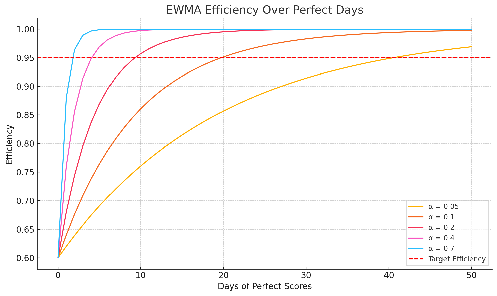

🎯 Adaptive Efficiency Monitor Simulator (AEMS)
Track and forecast your performance with advanced EWMA modeling
📊 Historical Data
Enter your historical performance data to set the initial efficiency:
Initial Efficiency: 65.00%
⚙️ Simulation Parameters
📝 Event Severity Profile
Define the types of events and their severity scores:
📈 Aggregate Analysis (Multiple Simulations)
Run multiple simulations to analyze performance trends and probabilities.
What is the Adaptive Efficiency Monitor?
The Adaptive Efficiency Monitor is a sophisticated performance tracking system that uses Exponentially Weighted Moving Average (EWMA) to provide real-time insights into your efficiency trends and forecast future performance.
🎯 Key Features
Adaptive Scoring: Uses EWMA to give more weight to recent performance while maintaining historical context.
Event-Based Tracking: Monitors specific events with customizable severity scores.
Predictive Forecasting: Calculates how many perfect days you need to reach your efficiency goals.
Dynamic Simulation: Generates realistic scenarios based on your event probability weights.
📊 How EWMA Works
The Exponentially Weighted Moving Average gives exponentially decreasing weights to older observations. The formula is:
Where \(\alpha\) (alpha) is the smoothing factor between 0 and 1:
- Higher \(\alpha\) (0.1 - 0.3): More responsive to recent changes
- Lower \(\alpha\) (0.01 - 0.1): More stable, less reactive to daily fluctuations
🔢 Daily Performance Calculation
Each day's performance is calculated based on the events that occur:
This ensures that:
- Perfect days (no events) = 100% performance
- Days with maximum severity = 0% performance
- Everything else falls proportionally between these extremes
🔮 Forecasting Algorithm
The system calculates how many consecutive perfect days are needed to reach your target efficiency using:
This mathematical model provides realistic expectations for goal achievement.
💡 Practical Applications
Personal Productivity: Track habits, mistakes, or goal achievement.
Quality Control: Monitor defects, errors, or process failures.
Health & Wellness: Track dietary lapses, missed workouts, or medication adherence.
Business Metrics: Monitor customer satisfaction, delivery performance, or operational efficiency.
⚙️ Parameter Guide
Historical Data: Use past performance to set a realistic starting point.
Smoothing Factor (\(\alpha\)): Start with 0.04-0.1 for most applications. Increase for faster adaptation to changes.
Max Daily Severity: Set the upper limit for how bad a single day can be. This prevents extreme outliers from dominating your score.
Target Increment: Set realistic improvement goals. Small increments (5-20%) are often more achievable than dramatic changes.
Perfect Day Probability: Set the probability of a perfect day to occur.
Second Event Probability: Set the probability of a random second event to occur.
📐 Why the Forecasting Formula Works (Proof)
Click to expand mathematical proof
The forecasting formula calculates the number of consecutive "perfect days" (where daily performance is 100%) required to increase your efficiency from a current value \(E_{current}\) to a target value \(E_{target}\). Here is the step-by-step derivation:
-
Start with the EWMA formula:
The efficiency on any given day \(E_{new}\) is a weighted average of the current day's performance \(P_{daily}\) and the previous day's efficiency \(E_{prev}\).$$ E_{new} = \alpha \cdot P_{daily} + (1 - \alpha) \cdot E_{prev} $$ -
Define the recurrence for consecutive perfect days:
For a perfect day, $$ P_{daily} = 1 $$. Let \(E_n\) be the efficiency after \(n\) consecutive perfect days, starting from an initial efficiency of \(E_0\). The formula becomes a recurrence relation:$$ E_n = \alpha \cdot 1 + (1 - \alpha) \cdot E_{n-1} $$ -
Solve the recurrence relation:
To find a direct formula for \(E_n\), we can solve this relation. It's easier if we define a new variable, the "inefficiency," as \(D_n = 1 - E_n\). Substituting \(E_n = 1 - D_n\) into the recurrence:$$ 1 - D_n = \alpha + (1 - \alpha)(1 - D_{n-1}) $$This shows that the inefficiency decreases geometrically each day. After \(n\) days, the relationship is:
$$ 1 - D_n = \alpha + 1 - \alpha - (1 - \alpha)D_{n-1} $$
$$ -D_n = -(1 - \alpha)D_{n-1} $$
$$ D_n = (1 - \alpha)D_{n-1} $$$$ D_n = (1 - \alpha)^n \cdot D_0 $$Substituting back \(E_n\) and \(E_0\), we get the explicit formula for efficiency after \(n\) perfect days:$$ E_n = 1 - (1 - E_0)(1 - \alpha)^n $$ -
Solve for \(n\) (Days Needed):
Now, we set \(E_0 = E_{current}\) and we want to find the number of days \(n\) it takes for the efficiency \(E_n\) to reach \(E_{target}\).$$ E_{target} = 1 - (1 - E_{current})(1 - \alpha)^n $$We rearrange the equation to isolate \(n\):$$ \frac{1 - E_{target}}{1 - E_{current}} = (1 - \alpha)^n $$Take the natural logarithm (ln) of both sides to bring \(n\) down from the exponent:$$ \ln\left(\frac{1 - E_{target}}{1 - E_{current}}\right) = n \cdot \ln(1 - \alpha) $$Finally, we solve for \(n\):$$ n = \frac{\ln\left(\frac{1 - E_{target}}{1 - E_{current}}\right)}{\ln(1 - \alpha)} $$ -
Final Step - The Ceiling Function:
Since the number of days must be an integer, and we need to guarantee we meet or exceed the target, we take the ceiling of the result. This gives us the final forecasting formula used in the simulator.$$ Days\ Needed = \lceil n \rceil = \lceil \frac{\ln(\frac{1 - Target}{1 - Current})}{\ln(1 - \alpha)} \rceil $$
📈 Visualizing EWMA Convergence
This plot shows how fast your efficiency increases for different smoothing factors (\(\alpha\)) when every day is perfect:
📘 Example: Understanding AEM Step-by-Step
To make everything clearer, here's a complete example showing how the Adaptive Efficiency Monitor (AEM) works from start to finish.
- Scenario: You want to track your focus during a 120-day study period. You recall that you had about 42 bad days (days where you lost focus or wasted time).
- Step 1 – Initial Efficiency: \((1 - 42/120) \times 100 = 65\%.\) This becomes your starting point.
- Step 2 – Event Definitions:
You define possible daily issues:
- “Minor Distraction” – severity 1
- “Major Procrastination” – severity 4
- Step 3 – Simulation Settings:
You're simulating 25 future days. You set:
- Max daily severity = 10
- Smoothing factor (\(\alpha\)) = 0.04
- Target increment = 20% (your goal is to reach 85% efficiency)
- Perfect day probability = 40%
- Second event probability = 35%
- Step 4 – Daily Performance:
Suppose on Day 1 you had a “Major Procrastination” (severity 4).
\(Daily\ Performance = 1 - (4/10) = 0.6\)
\(New\ Efficiency = 0.04 \times 0.60 + 0.96 \times 0.65 = 0.648 \approx 64.8\%\) - Step 5 – Forecasting:
To reach 85% efficiency, AEM calculates how many perfect days you need using the forecast formula:
$$ Days = \lceil \ln((1 - 0.85)/(1 - 0.648)) / \ln(1 - 0.04) \rceil \approx 38\ days $$
This gives you an accurate, adaptive picture of your progress—and shows you what to expect moving forward based on your behavior patterns.